中国人身险个险代理人
2019-2024约减少71%，行业从人海模式转向专业化。
从友邦2025年财报，看中国大陆市场与基本法机会
回答路径：财报证据 → 香港参照 → 大陆空间 → 人力机会 → 基本法利益
来源：友邦保险控股有限公司2025年报，第2、6页
1919年起源于上海；总资产3,450亿美元，服务约4,400万名个人保单持有人及1,600万名团险计划成员。
来源：友邦保险2025年报第2页
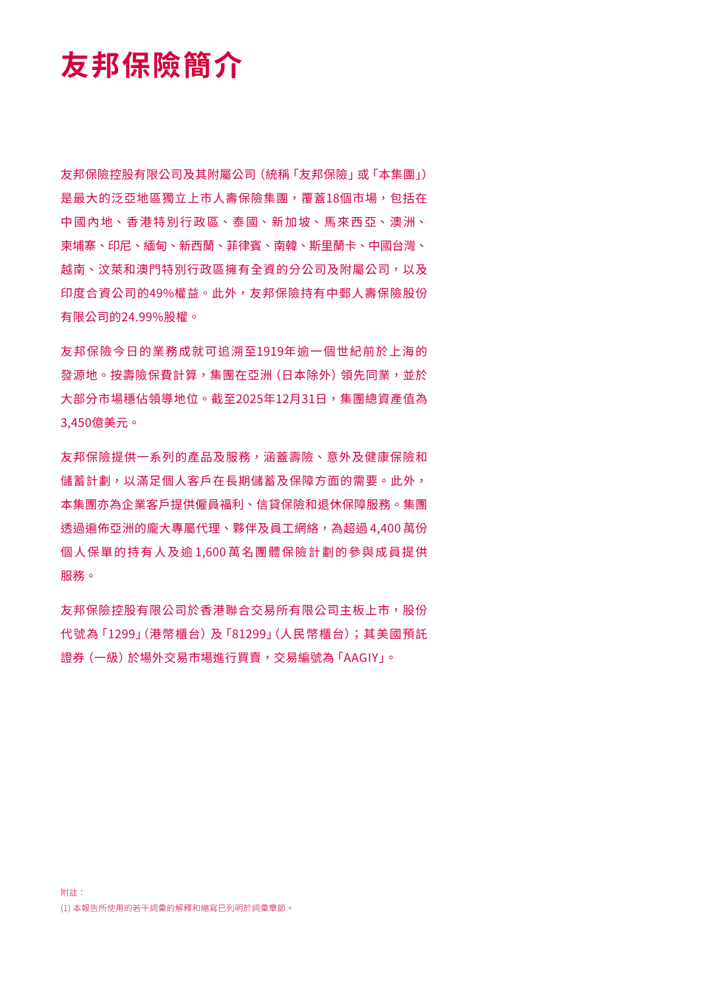
新业务价值55.16亿美元，同比增长15%；税后营运溢利71.36亿美元。先看原始财务指标，再讨论市场机会。
来源：友邦保险2025年报第6页
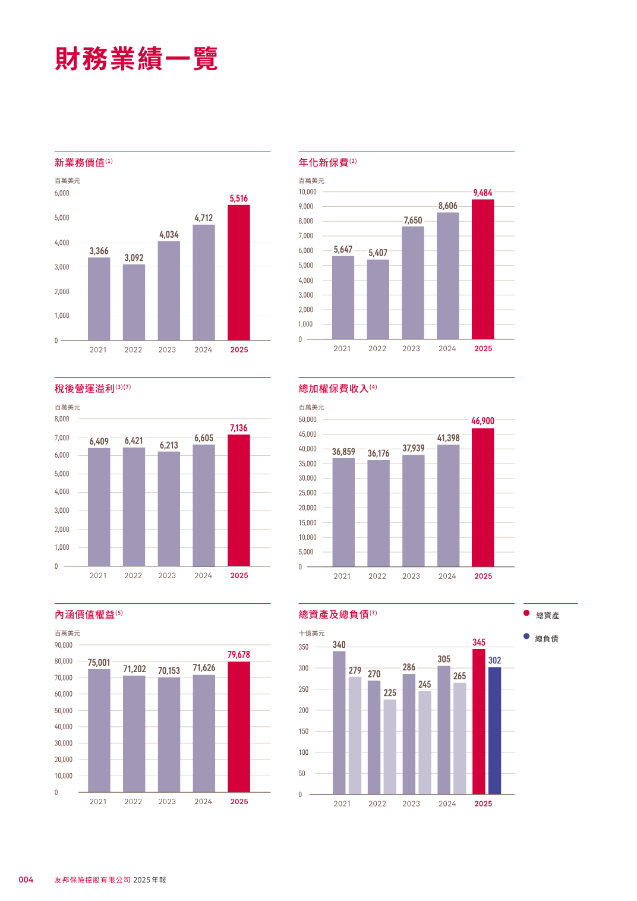
寿命延长，退休、医疗和长期照护需求持续增加。
家庭资产提升，保障、传承与长期储蓄需求变得更复杂。
私人保险渗透仍低，商业保障仍有较大补位空间。
复杂需求更依赖长期服务与个性化财务规划。
来源：友邦保险2025年报第13页
2025年香港贡献集团39%的新业务价值，中国大陆贡献21%；年化新保费占比分别为35%和23%。
来源：友邦保险2025年报，按市场分部划分
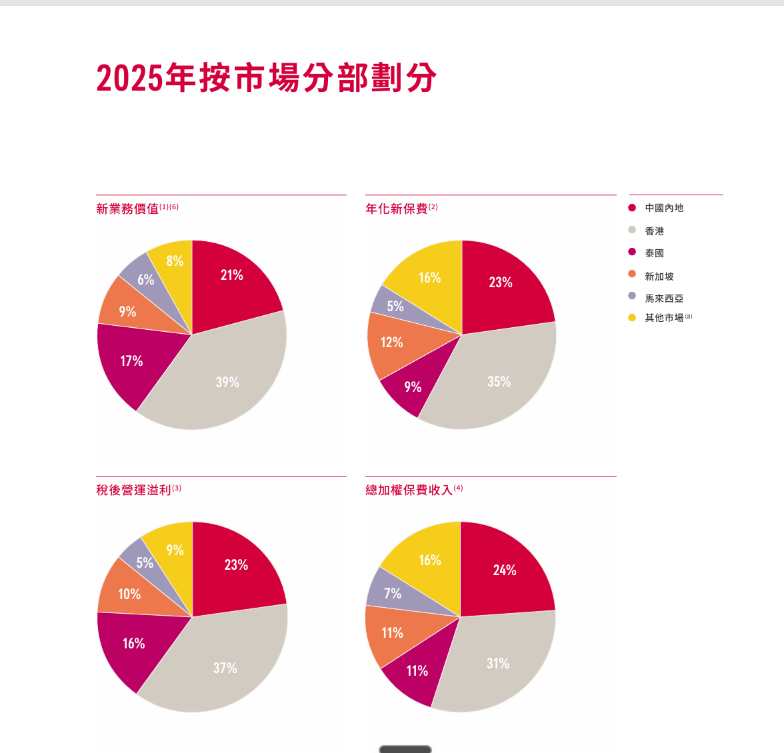
香港VONB 22.56亿美元、同比增长28%；大陆VONB 12.40亿美元、利润率57.6%。两者是成熟度不同，不是模式不同。
来源：友邦保险2025年报，新业务表现
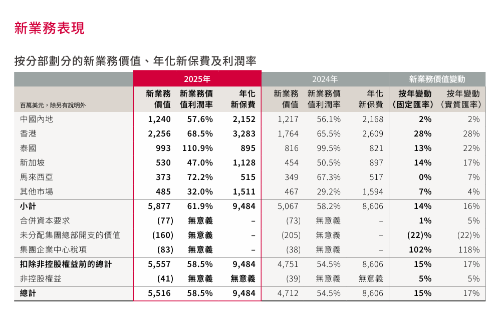
2025年底人口
2025年底常住人口
香港：政府统计处、金管局及友邦香港官方简介；上海：上海市统计局，7,000+为内部人力口径。两地人力统一采用“友邦代理人”称谓。
2025年代理渠道新业务价值42.73亿美元，同比增长13%；友邦连续第11年位列全球MDRT会员人数第一。
来源：友邦保险2025年报第16页
AIA+用户达到2,300万；95%的交易与99%的销售流程已实现数字化。人力扩张并不等于粗放扩张。
来源：友邦保险2025年报第17页
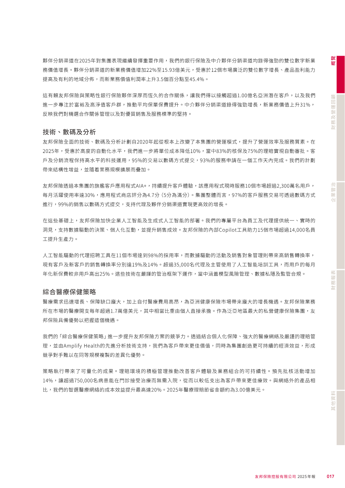
2019-2024约减少71%，行业从人海模式转向专业化。
同期减少约43%，市场总体人力持续出清。
2019-2025增长约39%；内部原图标注增长41%。
全国：行业及监管登记口径；2022年约340万由2023年281.34万及同比下降17.31%反推。上海市场与友邦上海采用内部趋势资料；友邦上海2020年按确认口径为5,678人。
组织收入，是对扩大客户覆盖、突破个人时间和圈层边界的回报。
一个人经营一家店，团队经营的是一组能够持续扩大的市场。
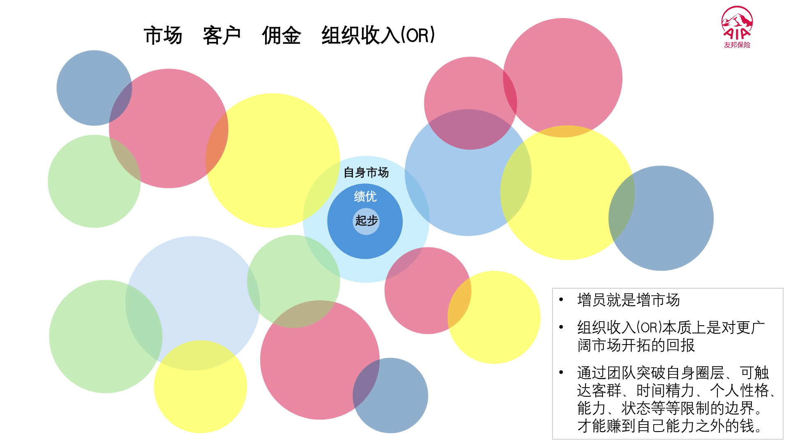
财报讲的是商业闭环；个人要做的，是进入并持续推动这个闭环。
内容依据内部招募分享与友邦2025年报整理
依据内部新人收入训练材料整理；以上未计季度奖及其他利益，须满足新人津贴及基本法条件，不构成收入承诺。
全年佣金：每月FYC 18,000 × 12
季度奖金示例：每季度FYC × 20%
第一年新人津贴达成示例
依据内部新人收入训练材料整理；假设每月6张、每张FYC 3,000并持续满足全部津贴与季度奖条件，不代表保证或普遍收入。
前3个月的佣金、津贴、季度奖金与身份定档相互关联，早期节奏会直接影响4-12个月的收入结构。
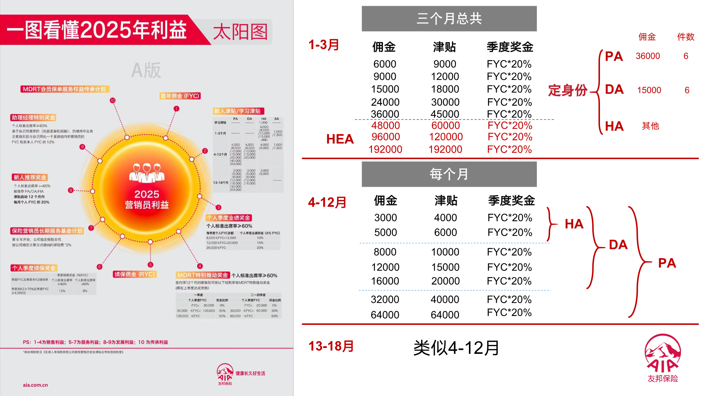
因为徒手捕鱼，一天只能得到一天的鱼。生产全部被消费，就没有剩余，也没有下一步。
今天不捕鱼，今天就没有收入。个人FYC很重要，但它首先解决的是当期生存。
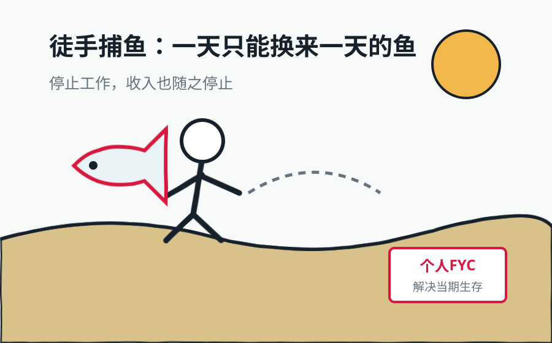
前三个月定档DA，就是先把活动量、件数和FYC做稳定。新人津贴与季度奖的作用，是帮助新人度过积累期。
基本法先奖励稳定生产，因为没有剩余，就没有学习、招募和晋升的本钱。
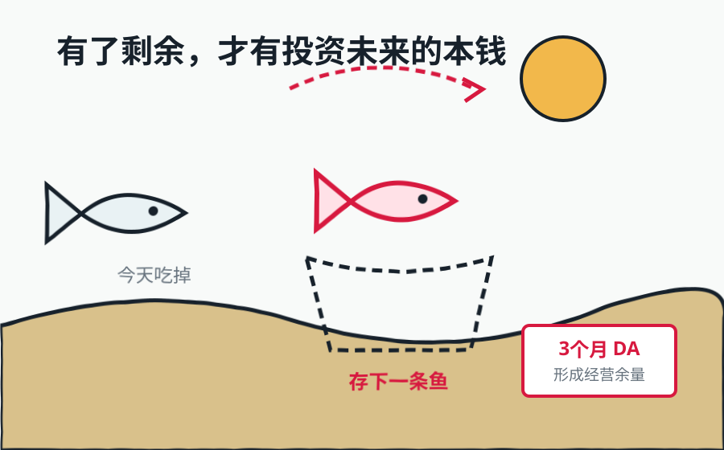
渔网让一天一条鱼变成一天两条。培训、客户经营方法、数字化工具和专业能力，就是代理人的“渔网”。
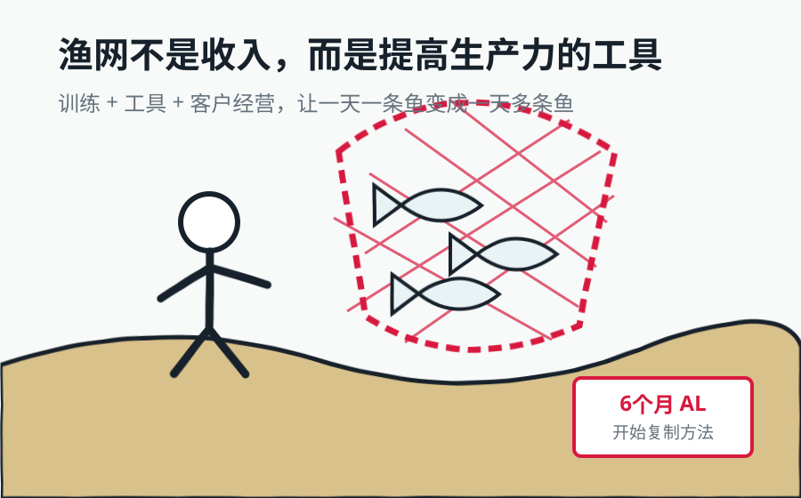
渔网提高了单日产量，却没有改变“只有一个人”的边界。客户数量、服务时间和市场半径，最终仍受个人精力限制。
下一次生产方式升级，不是把自己的网越织越大，而是把造网和捕鱼的方法教给更多人。
小岛真正变富，不是因为一个人捕到更多鱼，而是有人愿意用剩余培养下一位捕鱼者。新人稳定生产后，又能把新增的剩余投入下一轮培养。
稳定生产 → 投入新人 → 复制方法 → 扩大产能 → 再投入下一批
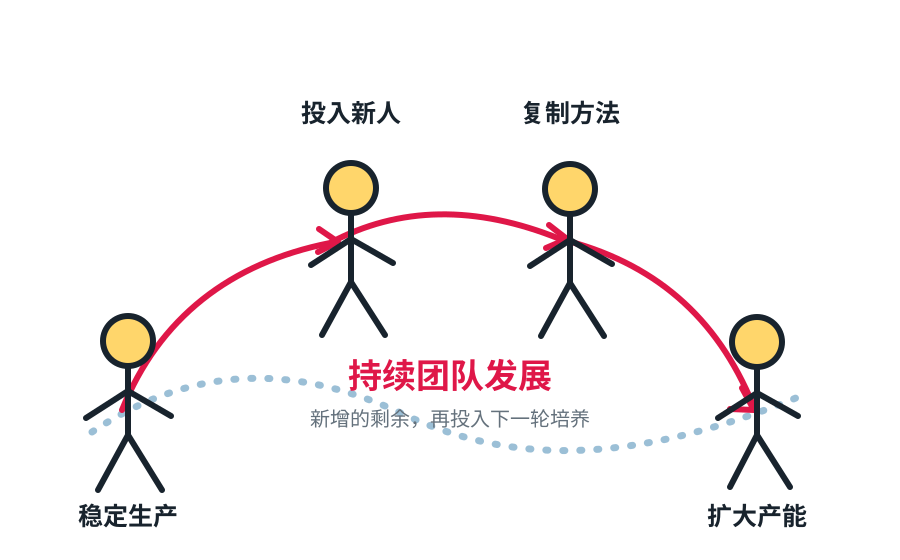
把市场机会带给合适的人。
帮助新人从徒手捕鱼走向稳定生产。
让新人也能造网、带人和复制方法。
用活动、续保与质量让循环长期运转。
基本法的组织利益，不是对“人数”的简单奖励，而是对招募、培养、育成和长期经营投入的回报。
以新人首年FYC为计量基础
同时满足档位与质量条件
比例依据2026基本法简略组织利益图整理，均以新人首年FYC为计量基础；具体资格、发放及回溯条件以正式基本法为准。
月度管理奖、年度管理奖与主管增员奖共同构成首年最高与最低利益区间。
只要伙伴持续经营、主管持续陪伴，并符合当期基本法条件，管理利益就不止存在于第一年。
“长期”不等于无条件自动领取；伙伴有效经营、组织关系及主管资格须持续满足正式基本法要求。
数据来源：2025年友邦各职级月平均收入内部参考图；单位为万元/月。为历史平均参考，不代表个人保证收入。
个人生产打底，同时开始增员与辅导。
把方法交付给新人，建立第一个团队单元。
收入越来越取决于团队产能、质量与育成结果。
直接培育5个主管，并间接培育5个主管。
业务总监蓝图中，目标收入结构约90%来自团队建设与管理利益。这是发展蓝图，并非每位总监的实际收入比例或保证。
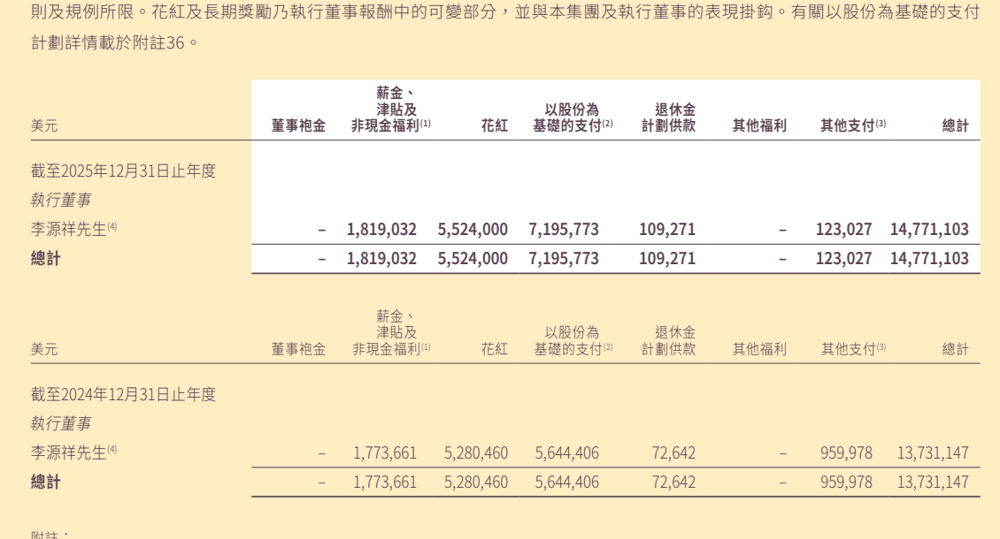
来源：友邦保险控股有限公司《2025年年报》财务报表附注37（PDF第303页、印刷页302），李源祥先生以集团首席执行官兼总裁身份取得薪酬，不另收董事袍金。本页仅作为职业经理人级收入参照，不代表或保证代理人、业务总监收入。
稳定个人生产，形成经营余量
开始招募、辅导和复制方法
形成第一个可持续经营单元
先稳定生产，再造自己的渔网；带出更多会捕鱼的人，最终拥有一座能够持续运转的岛。
谢谢